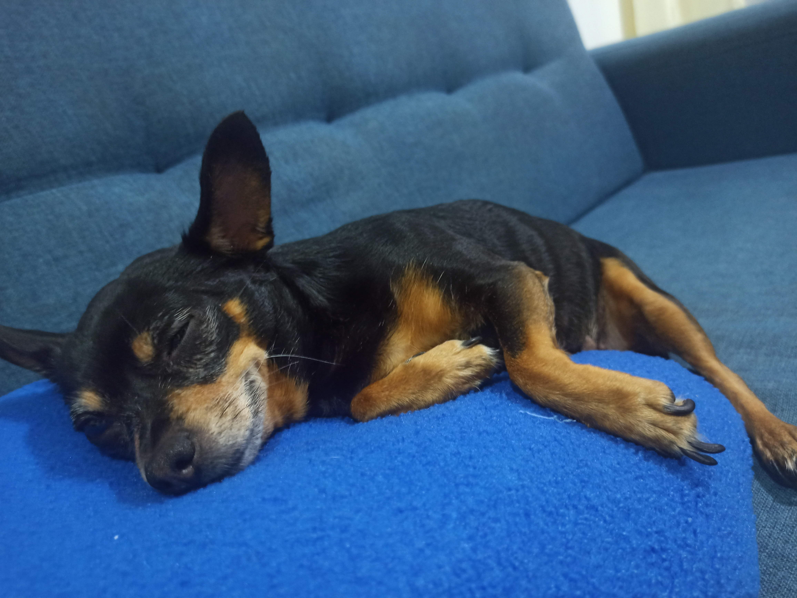

Un poco de mi vida
No todo en mi vida son líneas de código, arquitecturas y diagramas. Fuera de la pantalla cultivo pasiones que me mantienen creativo, equilibrado y conectado con lo que realmente importa.
Descargar CV-
Mi comida favorita
Me gusta todo tipo de comida, a excepción de la sandía y la papaya. Disfruto mucho de una buena comida después de un día cansado, y relajarme en mi cuarto mientras veo anime o alguna serie.
-
Deportes
Voy al gimnasio y juego voley. Mi compañero me obliga a jugar futbol y me encanta botar los balones.
-
Escuchar musica
Me gusta todo tipo de música que tenga buen ritmo; la agrego a mi playlist sin excepción. Mi cantante favorito es J Balvin.
-
Tiempo de calidad
Juego mucho en mi celular y la mayoría del tiempo me la paso viendo anime. Tengo una gran lista de ellos.
-
Amor a Lulu
Amo a mi perrita; siempre que llego, su felicidad me arregla el día. Hacemos mini paseos a la esquina porque se cansa rápido y es muy, pero muy perezosa.
